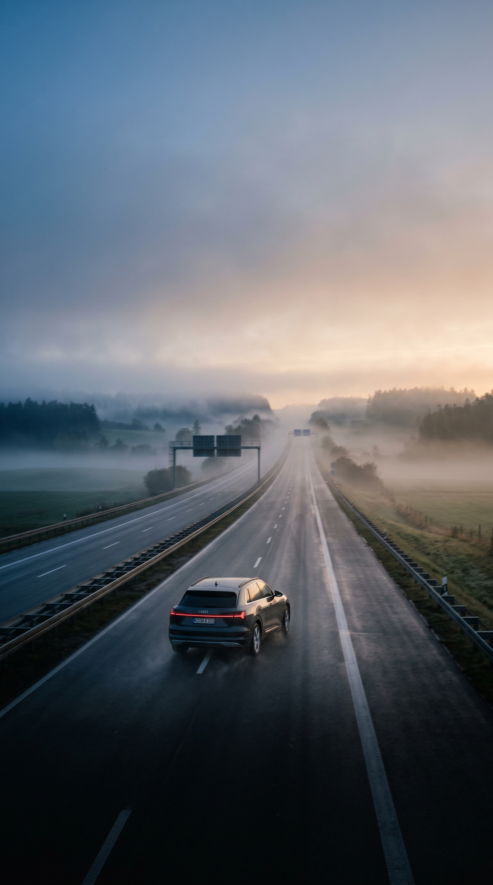
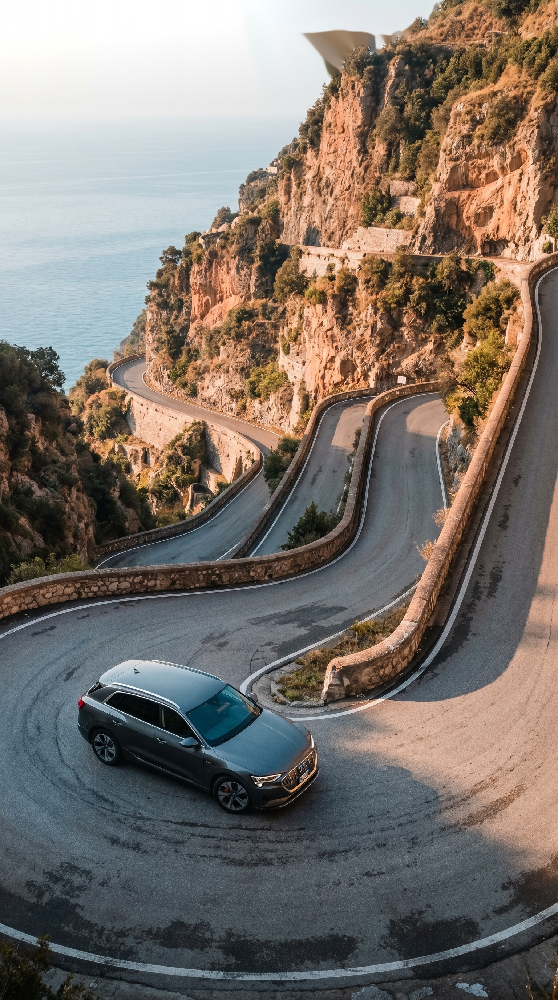
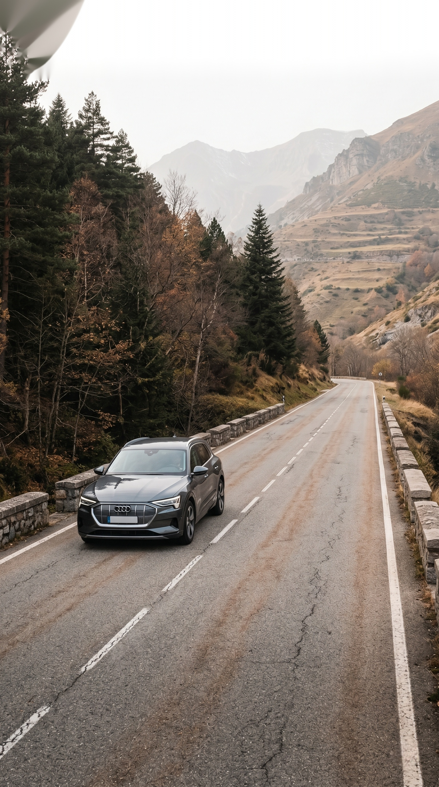
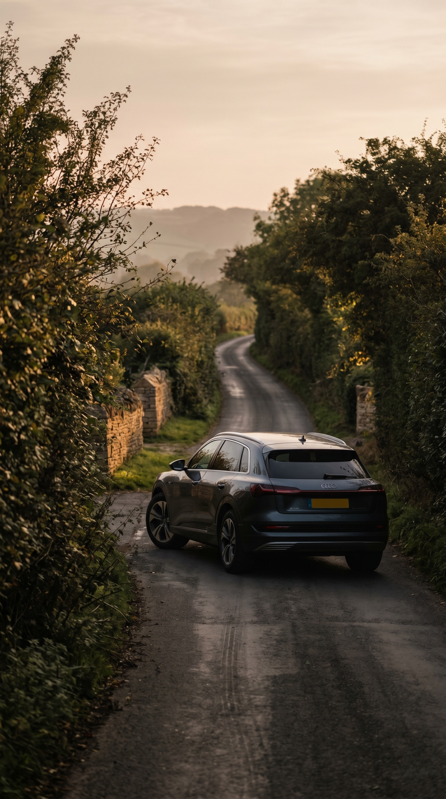

Co-Hero · Spec Project
Six Hero Cells, Rendered
The Lifestyle Commuter audience track of the variant matrix. Six markets, each grounded in a specific local road truth, all generated through prompt scaffolds with reference imagery anchors (Hammershøi · Saul Leiter · Wim Wenders) and a non-optional negative-prompt block. Headlines pass the brand-substitution test: rewrite each one until BMW couldn't say it.




All six cells: AI-generated through Gemini Imagen with reference imagery anchors and full negative-prompt block. No real Audi assets, IP, or relationships used — this is a spec project. The AT cell is shot from the Heiligenblut south approach, a road I have personal regional access to (Carinthia-resident designer); other markets are filled by the system's input layer with cultural-truth slots designed for local team handover.
The case below is the full design package: brief, master idea, system architecture, prompt scaffolds, anticipated failure analysis. Roughly 9,800 words. Read in order or skim section headers — both have been planned for.